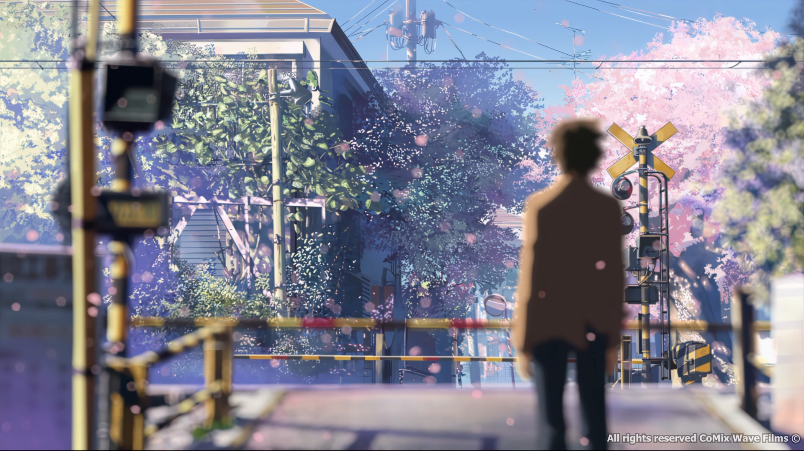
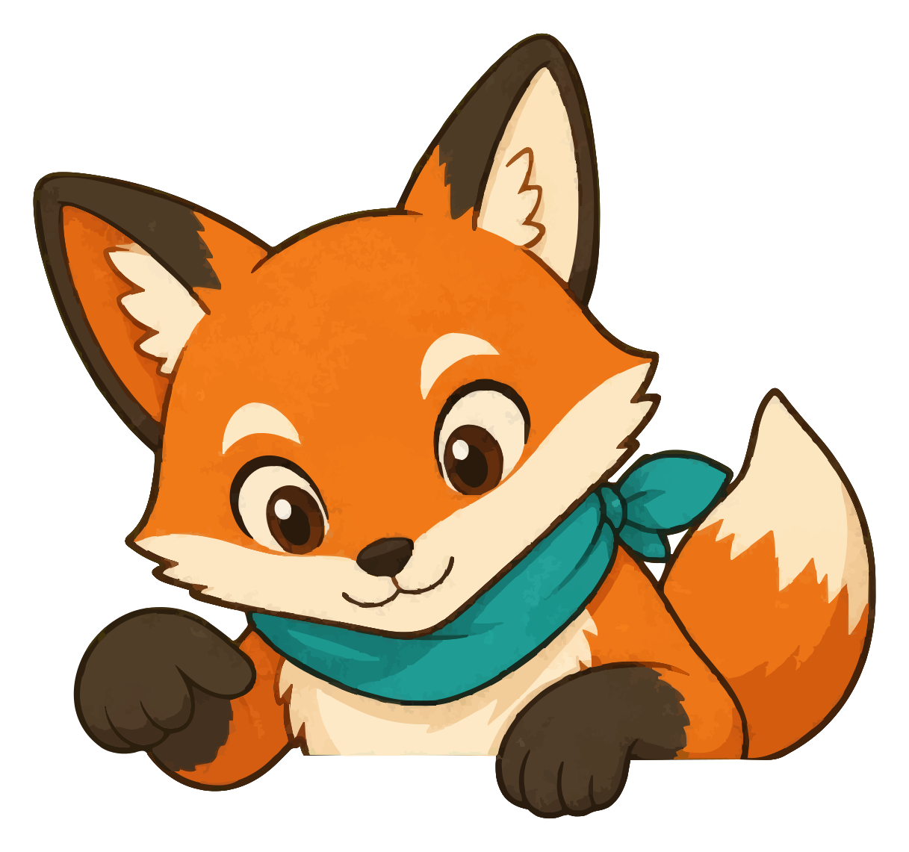

DEMO
◂ Hub
写真を差し替える
参宮橋の実拍に戻す
リセット
本当に合成してるよ
：入口＝
構図ページ
（看着帧呼出相机）→カメラ起動（
真 getUserMedia + ghost 叠帧
，拒权→fallback 取景器）→シャッター→合成。也可直接拖照片/ロール選ぶ（HEIC 其场怒られる）。保存＝P5→
真下载 JPG
。
21:32
‹
この構図を撮る
参宮橋踏切 · 本編 04:40

本編 04:40
復刻メモ
1
踏切の白線を下辺に
2
架線の柱を左右に振り分ける
3
電車待ちの間に構えると◎
◎
機位まで
40m
（Anitabi 座標から）
ロールから選ぶ
カメラを起動 →
本編 04:40 · 参宮橋
◉ GPS・向き 記録中
ゴースト
55
%
やめる
グリッド
ON
ここに写真を落として差し替え
余白
14px
底色
フィルターはないよ
◉
この写真の
向き 312° · 26mm
、Anitabi の機位データに送って未来の巡礼者を助ける？
送る（推奨）
HEIC のままだと合成できないよ。
iPhone なら「設定 → カメラ → フォーマット → 互換性優先」か、写真アプリから JPG で書き出してね。
合成規格：JPEG 0.9 · 横帧→上下拼（縦なら左右拼に自動）· 写真は帧と同比率に center-crop · 水印固定左下
画像・座標：Anitabi (CC BY-NC-SA 4.0) · © コミックス・ウェーブ・フィルム
写真を選び直す
画像を保存（JPG）

保存にはログインが要るよ
この対比図をカットに掛けて、
しおりでも使えるようにするためだよ。
あとで
ログインして保存